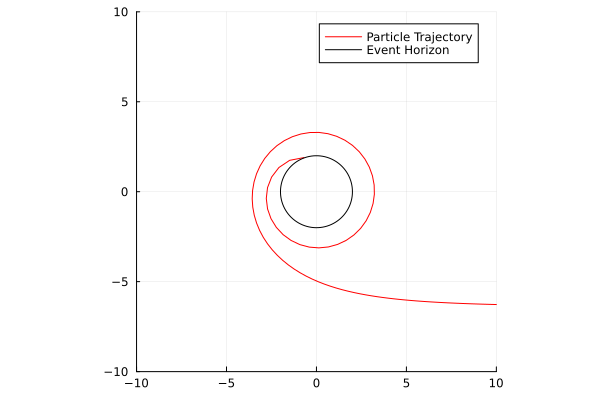
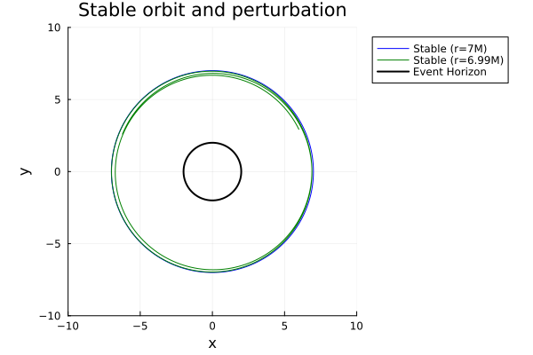
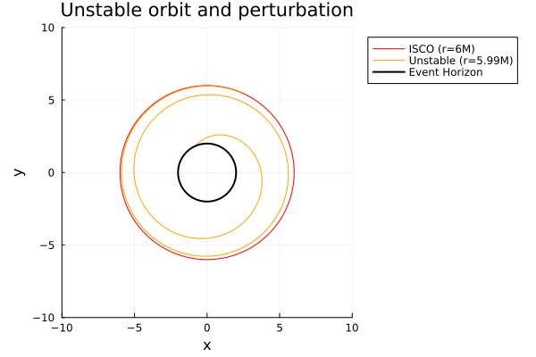
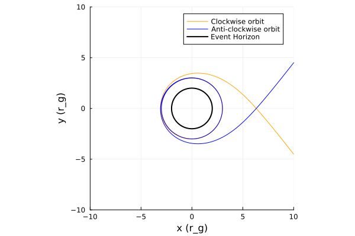

Schwarzschild metric
The Schwarzschild metric describes the geometry of spacetime outside a non-rotating, spherical black hole with no magnetic field. Its only parameter is mass M.
Metric definition
The metric is given by: $ds^{2} = -\left(1-\dfrac{r_s}{r}\right) dt^{2} + \left(1-\dfrac{r_s}{r}\right)^{-1}dr^{2} + r^{2}d\theta^{2} + r^{2}sin^{2}(\theta)d\phi^{2}$
or in matrix form:
\[g_{\mu\nu} = \begin{pmatrix} -\left(1-\dfrac{r_s}{r}\right) & 0 & 0 & 0 \\ 0 & \left(1-\dfrac{r_s}{r}\right)^{-1} & 0 & 0 \\ 0 & 0 & r^2 & 0 \\ 0 & 0 & 0 & r^2\sin^2\theta \end{pmatrix}\]
where
\[r_{s} = 2M\]
- ($t$) : time coordinate
- ($r$) : radial coordinate
- ($\theta$) : polar angle
- ($\phi$) : azimuthal angle
Christoffel symbols
\[\begin{aligned} \Gamma^{r}_{tt} & = \frac{r_s (r - r_s)}{2 r^3}, & \Gamma^{t}_{tr} & = \frac{r_s}{2r(r - r_s)}, & \Gamma^{r}_{rr} & = -\frac{r_s}{2r(r - r_s)}, \\[2mm] \Gamma^{\theta}_{r\theta} & = \frac{1}{r}, & \Gamma^{\phi}_{r\phi} & = \frac{1}{r}, & \Gamma^{r}_{\theta\theta} & = -(r - r_s), \\[2mm] \Gamma^{\phi}_{\theta\phi} & = \cot\theta, & \Gamma^{r}_{\phi\phi} & = -(r - r_s)\sin^2\theta, & \Gamma^{\theta}_{\phi\phi} & = -\sin\theta \cos\theta \end{aligned}\]
Special radii
The ISCO of a Schwarzschild black hole is at $6r_s$ or $6M$. Matter inside this radius will spiral into the event horizon as shown here:
Click to expand / collapse code block.
using Gradus
# define Schwarzschild spacetime
struct Schwarzschild{T} <: AbstractStaticAxisSymmetric{T}
M::T
end
function Gradus.metric_components(m::Schwarzschild, x)
r, θ = x
M = m.M
dt2 = -(1 - (2M / r))
dr2 = -inv(dt2)
dθ2 = r^2
dϕ2 = r^2 * sin(θ)^2
dtdϕ = zero(r)
SVector(dt2, dr2, dθ2, dϕ2, dtdϕ)
end
Gradus.inner_radius(m::Schwarzschild) = 2 * m.M
m = Schwarzschild(1.0)
x = SVector(0.0, 1000.0, π/2, 0.0)
v = SVector(0.0, -1.0, 0.0, -6.655e-6)
λ_max = 2000.0
sol = tracegeodesics(m, x, v, λ_max, μ=1.0)
using Plots
# plot solution trajectory
fig3 = plot_paths(sol, label = "Particle Trajectory", color = :red)
plot_horizon!(m, label = "Event Horizon")
Stable Orbit and Pertubation
The plot below shows two orbits. One is at $7M$ and one is pertubated slightly so appears at $6.99M$. Both of these orbits have equal velocity and both are circular. This shows that a slight pertubation to a stable orbit, (one that is outside the ISCO $(6M)$), will not cause it to spiral into the black hole.
Click to expand / collapse code block.
using Gradus, Plots
#Stable and Perturbed Stable orbits
# Schwarzschild black hole
m = KerrMetric(M=1.0, a=0.0)
λ_max = 2000
# Radii
r_stable = 7.0
r_stable2 = 6.99
# Initial velocities
v_stable = CircularOrbits.fourvelocity(m, r_stable) #gives the 4-velocity for a circular orbit at r_stable
v_stable2 = v_stable # Perturbation: same velocity as stable orbit, but at a slightly smaller radius
# Initial positions
x_stable = @SVector [0.0, r_stable, π/2, 0.0]
x_stable2 = @SVector [0.0, r_stable2, π/2, 0.0]
# Trace geodesics
sol_stable = tracegeodesics(m, x_stable, v_stable, λ_max, μ=1.0)
sol_stable2 = tracegeodesics(m, x_stable2, v_stable2, λ_max, μ=1.0)
# Plot
p = plot(aspect_ratio=1)
plot_paths!(p, sol_stable, label="Stable (r=7M)", color=:blue)
plot_paths!(p, sol_stable2, label="Stable Perturbation (r=6.99M)", color=:green)
plot_horizon!(m, lw=2, color=:black, label="Event Horizon")
xlabel!("x")
ylabel!("y")
xlims!(-10, 10)
ylims!(-10, 10) # Set limits to better visualize the orbits and horizon
plot!(p, legend=:outertopright) # Adjust legend position to avoid overlap with trajectories

Unstable Orbit and Pertubation
Whereas this figure shows two orbits again. Only this time one is on the ISCO and the other has a pertubation such that it is very slightly inside. Now, the one on the ISCO is only just stable and remains circular, but the pertubated one is in the plunging region so it spirals into the event horizon.
Click to expand / collapse code block.
using Gradus, Plots
#ISCO and unstable
# Schwarzschild black hole
m = KerrMetric(M=1.0, a=0.0)
λ_max = 2000
# Radii
r_ISCO = 6.0
r_unstable = 5.99
# Circular geodesic velocities
v_ISCO = CircularOrbits.fourvelocity(m, r_ISCO)
v_unstable = v_ISCO
# Initial positions
x_ISCO = @SVector [0.0, r_ISCO, π/2, 0.0]
x_unstable = @SVector [0.0, r_unstable, π/2, 0.0]
# Trace geodesics
sol_ISCO = tracegeodesics(m, x_ISCO, v_ISCO, λ_max, μ=1.0)
sol_unstable = tracegeodesics(m, x_unstable, v_unstable, λ_max, μ=1.0)
# Plotting
p = plot(aspect_ratio=1)
plot_paths!(p, sol_ISCO, label="ISCO (r=6M)", color=:red)
plot_paths!(p, sol_unstable, label="Unstable (r=5.99M)", color=:orange)
plot_horizon!(m, lw=2, color=:black, label="Event Horizon")
xlims!(-10, 10)
ylims!(-10, 10)
plot!(p, legend=:outertopright)
xlabel!("x")
ylabel!("y")
No Frame Dragging Effect
As Schwarzschild black holes do not spin, the photon orbit and the ISCO will have a constant radius as there is no concept of prograde or retrograde motion. The figure below demonstrates this by showing two photon orbits going round the black hole, clockwise and anti-clockwise at the same radius.
Click to expand / collapse code block.
using Gradus, Plots
m = KerrMetric(M=1.5, a=0.0)
# observer position
x = SVector(0.0, 10000.0, π/2, 0.0)
# set up impact parameter space
α = collect(range(-7.794, 7.794, 2))
β = fill(0, size(α))
# build initial velocity and position vectors
vs = map_impact_parameters(m, x, α, β)
xs = fill(x, size(vs))
sols = tracegeodesics(m, xs, vs, 20000.0)
fig5 = plot_paths(sols, legend = true, n_points = 2048, label = "Photon Trajectory")
plot_horizon!(m, lw = 2.0, color = :black, label = "Event Horizon")